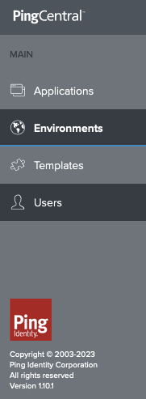

Upgrading PingCentral
Example Only
This example is for demonstration purposes only. It is not intended to reflect the complexities of a full production environment and will need to be adapted accordingly.
Video walkthrough
A video demonstration of this process can be found here.
Caveats
Kubernetes and Helm
This document will focus on deployments in a Kubernetes environment using the ping-devops Helm chart. However, the concepts should apply to any containerized PingCentral deployment.
This document will become outdated
The examples referenced in this document point to a specific tag. This tag may not exist at the time of reading. To correct the issue, update the tag on your files appropriately. This example uses versions 1.10 and 1.14, but the process should be similar for other versions in the future.
MySQL is used as the PingCentral Datastore
A separate MySql container is deployed manually to provide a backing store for PingCentral. In a production environment, you would likely use a managed database service.
H2 Internal Database
If you are not using an external database, and are on a version <= 1.10, you will need to be aware of possible issues with the move to the H2v2 database internally. See the PingCentral documentation for more details. It should be noted that the internal H2 database is not supported for production environments.
The Ping-provided baseline Profile is used as a starting point for PingCentral
The default baseline profile is used for this guide. In a production environment, you would likely use a custom repository and profile.
Overall Process
Steps:
- Deploy the old (1.10) version of PingCentral with the baseline server profile
- Create a test user in PingCentral and perform other validation steps
- Copy the
pingcentral.jwkfile to your server profile - Deploy the new (1.14) PingCentral version with a custom server profile
- Validate the upgrade
Prerequisites
Assumptions and requirements:
- You have set up your DevOps environment and can run a test deployment of the products. For more information, see Get Started.
- This example was written using Docker Desktop with Kubernetes enabled on the Mac platform. The version used was
4.27.1 (136059), which includes Docker Enginev25.0.2and Kubernetesv1.29.1. The ingress-nginx controller version was1.9.6, deployed from Helm chart version4.9.1.
Environment Preparation
Clone the getting-started repository
-
Clone the
pingidentity-devops-getting-startedrepository to your local${PING_IDENTITY_DEVOPS_HOME}directory.pingctl utility
The
${PING_IDENTITY_DEVOPS_HOME}environment variable was set by runningpingctl config.cd "${PING_IDENTITY_DEVOPS_HOME}" git clone \ https://github.com/pingidentity/pingidentity-devops-getting-started.git
Prepare the environment with a namespace and ingress controller
-
Create a namespace for running the stack in your Kubernetes cluster.
# Create the namespace kubectl create ns pingcentral-upgrade # Set the kubectl context to the namespace kubectl config set-context --current --namespace=pingcentral-upgrade # Confirm kubectl config view --minify | grep namespace: -
Deploy the ingress controller to Docker Desktop:
helm upgrade --install ingress-nginx ingress-nginx \ --repo https://kubernetes.github.io/ingress-nginx \ --namespace ingress-nginx --create-namespace -
Wait for the Nginx ingress to reach a healthy state by running the following command. You can also observe the pod status using k9s or by running
kubectl get pods --namespace ingress-nginx. You should see one controller pod running when the ingress controller is ready. This command should exit after no more than 60 seconds or so, depending on the speed of your computer:kubectl wait --namespace ingress-nginx \ --for=condition=ready pod \ --selector=app.kubernetes.io/component=controller \ --timeout=90s -
Create a secret in the namespace you will be using to run the example (upgrade) using the
pingctlutility. This secret will obtain an evaluation license based on your Ping DevOps username and key:pingctl k8s generate devops-secret | kubectl apply -f - -
This example will use the Helm release name
demoand DNS domain suffix*pingdemo.examplefor accessing applications. Add the expected hostname to/etc/hosts:echo '127.0.0.1 demo-pingcentral.pingdemo.example' | sudo tee -a /etc/hosts > /dev/null -
Navigate to your local directory where you cloned the repository (
"${PING_IDENTITY_DEVOPS_HOME}"/pingidentity-devops-getting-started/30-helm/) directory and run the command shown here to deploy the MySQL pod usingkubectl. This deployment will be used as the backing store for PingCentral.kubectl apply -f pingcentral-external-mysql-db/mysql.yaml
Fork or clone the Ping server profile repository
-
Fork the pingidentity-server-profiles repository to your GitHub account. If you do not have a GitHub account, you can clone the repository instead. For this guide, the repository will be forked to
test-server-profileswhich will be pulled locally to${HOME}/projects/test-server-profiles.cd "${HOME}/projects" git clone <account>/test-server-profiles.git ${HOME}/projects/
Deploy the old version of PingCentral with the Ping baseline server profile
-
Install the initial version by running the command shown here. In this example, the release
demoforms the prefix for all objects created. The ingress is configured to use the ping-local domain:cd "${PING_IDENTITY_DEVOPS_HOME}"/pingidentity-devops-getting-started/30-helm/ helm upgrade --install demo pingidentity/ping-devops -f pingcentral-upgrade/01-original.yaml
This command will take a few minutes to complete. You can monitor the progress using kubectl get pods or k9s.
Access the PingCentral Console
-
Login to the PingCentral Administrative Console using the credentials
administrator/2Federate. The URL is https://demo-pingcentral.pingdemo.example. -
Select Users from the left navigation menu and click Add User. Create a user to be used to validate PingCentral after the upgrade (the user specifics and role do not matter for this example).
The left navigation panel should indicate version 1.10.0 at the bottom as shown here: 
Confirm Database Entries
Shell into the MySQL pod and confirm that the user you created is present in the database. Also, verify the version of PingCentral in the DATABASECHANGELOG table.
kubectl exec -it mysql-0 -- bash
# Use the password from the mysql.yaml file (2Federate)
mysql -u root -p
use pingcentral;
# The user will be listed here
select * from users;
# The version will be listed here, with the last lines of the table showing the most recent entries
# at version v1.10 and v1.11 (46 lines total at the time of this writing)
select * from DATABASECHANGELOG;
Add the pingcentral.jwk file to your server profile
-
Copy the
pingcentral.jwkfile from the PingCentral pod. This file will be used in the next step to configure the new PingCentral instance. This example places the file in the repository directory from the fork created earlier.kubectl cp demo-pingcentral-6d4bb97c98-m7vwb:/opt/out/instance/conf/pingcentral.jwk ${HOME}/projects/test-server-profiles/baseline/pingcentral/external-mysql-db/instance/conf/pingcentral.jwk -
Check to see that the
pingcentral.jwkfile has been placed in your server-profile and push these changes to your repository.cd "${HOME}/projects/test-server-profiles" git add . git commit -m "Added pingcentral.jwk file" git push
Pod Name
The pod name from which you copy will vary.
JWK Unique to PingCentral Instance
The pingcentral.jwk file is used to encrypt and decrypt the PingCentral configuration. It is unique to each PingCentral instance and must be copied to the new server profile. Otherwise, the new pod will fail to start.
File copy error
If you receive an notification tar: removing leading '/' from member names when copying the file, it can be ignored.
Security Warning
Storing the pingcentral.jwk file in the server profile is not recommended for production environments. In a production environment, you would likely use a managed key store service, vault, or other encrypted mechanism.
Deploy the new version of PingCentral with a custom server profile
- Update the
/pingidentity-devops-getting-started/30-helm/pingcentral-upgrade/02-upgraded.yamlfile to point to the repository and profile directory that contains the JWK file. This example uses thetest-server-profilesrepository, but you should use your own information.
helm upgrade --install demo pingidentity/ping-devops -f pingcentral-upgrade/02-upgraded.yaml
The new pod will spin up, and when it is healthy, the old pod will be terminated. At this time, you should have an upgraded PingCentral instance. Log in to the administrative console as before. The user you created earlier should still exist, and the version information at the lower left should indicate version 1.14.0. In addition, a new left navigation item (Management) will be present that was not there before:

Finally, a check of the DATABASECHANGELOG table in the MySQL pod should show the new version of PingCentral as the last few entries in that table (51 entries as of this writing). These updated entries indicate the database migration was successful.
Not all versions have database migrations
The 1.10 -> 1.14 upgrade involved database updates. Not all versions will have database updates, and corresponding DATABASECHANGELOG entries might not be present.
Cleanup
After you have finished this demonstration, you can uninstall the Helm release and MySQL deployment, and delete the namespace:
helm uninstall demo
kubectl delete -f pingcentral-external-mysql-db/mysql.yaml
kubectl delete ns pingcentral-upgrade
Remove the entry from /etc/hosts if you do not plan to use the same hostname again:
sudo sed -i '' '/demo-pingcentral.pingdemo.example/d' /etc/hosts
You can also remove the test-server-profiles repository from your local machine and delete the forked repository from GitHub:
rm -rf "${HOME}/projects/test-server-profiles"